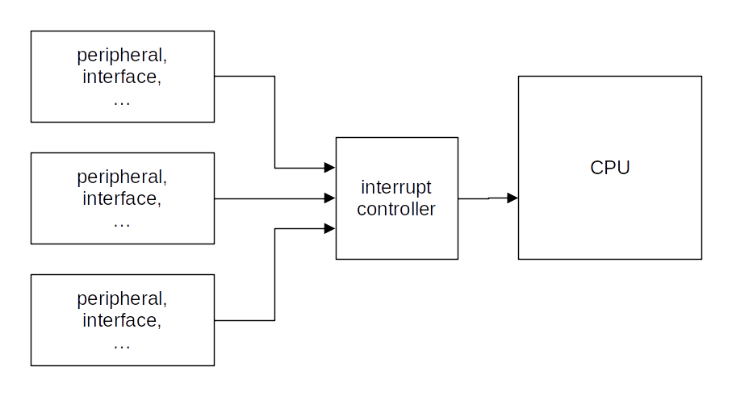

Introduction to embedded systems for ML
Pascal Bodin

Document history
| When | What |
|---|---|
| 08-Jan-2025 | Static/automatic memory info correction |
| 20-Dec-2024 | Concurrency and final parts |
| 16-Dec-2024 | Interrupts, execution environments |
| 12-Dec-2024 | Floating-point arithmetic |
| 25-Oct-2024 | I2C |
| 22-Oct-2024 | Debugger, SPI |
| 17-Oct-2024 | UART section |
| 12-Sep-2024 | Full table of contents |
| 26-Aug-2024 | ADC section |
| 29-Jul-2024 | Introductory part |
Licenses
Presentation
Creative Commons Attribution-NonCommercial-ShareAlike 4.0 International License
Source code
Credits
- reveal.js - Copyright (C) 2020 Hakim El Hattab
- Freepik from www.flaticon.com
- Electricity icons created by Dewi Sari - Flaticon
How to navigate
- Use the right and left arrows (in bottom right corner)
- Overview: press "O" letter - navigate with arrow keys - "ESC" or click on slide to exit
- Full screen: press "F" letter - "ESC" to exit
Contents - 1/3
Contents - 2/3
Contents - 3/3
Foreword
Who am I?
-
Independent consultant and freelancer - connected devices


- Beforehand: software engineer, project leader, team manager, co-founder, technical expert
- Digital Equipement Corporation (DEC), McDonnell Douglas Informations Systems, Orange
- Co-founded (and closed) two companies
- First connected devices project: in 1990
More information
Needs of embedded ML applications

Technical domains
Closer look - Computer Science

Closer look - Communication


Closer look - Electronics


Summarizing:
Presentation goal is to introduce the specifics of software development for an embedded target, in the field of ML application development.
Non-goal
- How to develop (embedded) ML applications
Introduction
Hardware progress
1982 - Cray X-MP

- World most powerful computer
- 0.94 GFLOPS (giga floating-point operations per second)
- Price: around US$15 million (would be US$45 million in 2022)
2022 - iPhone 14

- A15 Bionic chip with 5-core GPU: 1.7 TFLOPS
- Price: US$800
In 40 years:
- Processing power multiplied by around 1,700
- Cost divided by around 56,000
What do the years to come have in store?!
Embedded applications
1969 - The computer that made it possible to land on the Moon

- Weight: aroung 32 kg (without the user interface)
- Power supply: 28 V CC - 70 W
- Permanent memory: 36 Kwords (16 bits)
- Erasable memory: 2 Kwords (16 bit)
- Clock: 1 MHz (83 kHz instruction cycle time)
- Simple operating system, with priority handling
Margaret Hamilton

Compared to current configurations:
- Very little memory
- Very little processing power
Yet it allowed to bring human beings to the Moon.
It's not because you don't have a lot of memory and processing power that you can't develop great applications 🙂
A modern microcontroller with similar processing power:
- Flash memory: 128 Ko
- RAM: 8 Ko
- Clock: up to 64 MHz
- Power consumption: 30 mW (microcontroller alone)
- Power consumption in sleep mode: 0,1 μW
- Price: around US$3.00
Microcontroller board
Reminders - Memory content retention
- Volatile memory: content is lost when the system turns off - RAM
- Non-volatile memory: content is retained - Flash, EEPROM
Reminders - Memory hierarchy
From most rapid access to slowest access:
- Registers - inside the CPU
- Cache - inside and outside the CPU - usually not present in MCU
- Main memory
- Disk - magnetic or flash
- Registers: RAM
- Cache: RAM
- Main memory: RAM + flash
Microcontroller
- A computer in a chip:
- Central Processing Unit (CPU)
- Read-only memory (Flash memory)
- Read/write memory (RAM - Random Access Memory)
- Clocks
- Energy management
- Peripherals and interfaces:
- Analog I/O
- Digital I/O
- Timers
- Serial interfaces
- etc.
An example of MCU architecture:

Board architecture

- Microcontroller
- CPU + memory
- Some peripherals (e.g. timers)
- Interfaces (e.g. serial interfaces, GPIO)
- Power system
- Wireless communication
- Optional
- May be hosted by the microcontroller (Wi-Fi, Bluetooth, LoRa, etc.)
- Optionally:
- Additional interfaces
- Peripherals (e.g. sensors)
- Positioning (e.g. GNSS)
- User interface
- Data storage
- Not depicted: optional, additional memory, outside of the microcontroller
Important board/microcontroller characteristics?
- Depend on the target application!
- Example:
- General Purpose Input/Output (GPIO)
- Serial links
- Serial buses (SPI, I2C, etc.)
- Analog to Digital Converters (ADC), Digital to Analog Converters (DAC)
- Analog blocks
- Instruction cycle time
- Memory (size, type, expandable...)
- Registers size (8/16/32 bits)
- Packaging
- etc.
Other important characteristics: hardware tools
- Development board
- Programmer, debugger
- Open source hardware
Other important characteristics: software tools
- Cross-compilation toolchain
- Integrated Development Environment (IDE)
- Open source software
Other important characteristics: support
- Professional support
- Active community (forums, examples...)
Some common microcontroller families
Arm
- UK company created in 1990
- There isn't any Arm microcontroller
- Arm provides Intellectual Property (IP) blocks, under a licensing agreement
- Among these blocks: RISC microcontrollers cores
- For the IoT (low power, low cost): Cortex-M family
Shipped processors
- end 2020: 180 billions
- including 6.7 billions in Q4 2020
- including 4.4 billions of Cortex-M in Q4 2020
- Sep-2022: more than 250 billions
Arm processor architecture is more popular than any other architecture.
Some Cortex-M licensees:
Arm cores


Instruction sets

Provided elements

Example: STMicroelectronics - STM32 family

STM32L073RZ


- Price: US$6.95 (unit) - US$2.66 (10,000)
Development board

Price: US$13
STM32WL55


- Price: US$9.25 (unit) - US$4.54 (10,000)
Development board

US$42
Example: Silicon Labs - EFR32 family
- Bluetooth: EFR32BG21, EFR32BG22, EFR32BG24, EFR32BG26, EFR32BG27
- Wi-Fi: SiWx915, SiWx917, RS9116, WF200
- Thread: EFR32MG12, EFR32MG13, EFR32MG21, EFR32MG24
- Etc.
EFR32MG24
- Price: around US$7 (unit)
Development board

US$79
Espressif - ESP family
Espressif family
- ESP32-P Series - high-power RISC-V dual-core + low-power single-core
- ESP32-S Series - Xtensa LX7 dual-cor or single-core - Wi-Fi, BLE
- ESP32-C Series - RISC-V dual-core or single-core - Wi-Fi (2.4 GHz / 5 GHz), BLE, IEEE 802.15.4
- ESP32-H Series - RISC-V single-core
- ESP32 Series - Xtensa LX6 dual-core or single-core - Wi-Fi, Bluetooth, BLE
ESP32-C6FH4

Some of the features
- High-power RISC-V processor - clock up to 160 MHz
- Low-power RISC-V processor - clock up to 20 MHz
- L1 cache: 32 KB
- ROM: 320 KB
- Hig-power SRAM: 512 KB
- Low-power SRAM: 16 KB
- Flash: 4 MB
- Price: US$2.05
Development board

- Price: US$7.96
Software development - introduction
Cross development
Reminders
Usual development


Then you run the executable file.
Toolchain: compiler + linker + other utilities
Cross development for microcontroller board

Transferring the executable file to the microcontroller board can be done in several ways:
- Over a debug interface
- Over a serial link while the microcontroller runs a bootloader
- Over a wireless connection while the microcontroller runs a bootloader
- Etc.
Debugging
- The development computer can control the execution of the application running in the microcontroller
- Requires a debug interface on the microcontroller board and a serial link
- Every microcontroller manufacturer: full development environnement
- Often free
- Often based on Open Source software (Eclipse, gcc, openOCD, etc.)
Exercise 01
Build and run an Hello World application for the EFR32xG24 Dev Kit
EFR32MG24
xG24 Dev Kit

Reference documentation
Development environments
Several possibilities:
- Simplicity Studio v5 (SSv5) - based upon Eclipse IDE
- VS Code + extension
- ...
We will use SSv5.
SSv5


Exercise 01 - step 1
- Using git, clone the
RTOS-presentationGitHub repository - Follow the instructions provided by the
RTOS-presentation/exercises/01-HelloWorld-step1/README.mdfile.
Debugging
Debugging: process of finding the root cause of a bug.
Always try to reduce time devoted to debugging. How to do this is not part of this course, even if it contains some related information.
Generic architecture
- Microcontroller controlled by the debug probe
- JTAG: an industry standard, initially developped for verifying printed circuit boards (PCB)
- SWD: an Arm standard, fully debug oriented
- Debug probe controlled by the debugger server
- Debugger client used to send commands: run, pause, step, set breakpoint, etc.
For most of the dev boards, a simple probe is part of the board:
Exercise 01 - step 2
- Follow the instructions provided by the
RTOS-presentation/exercises/01-HelloWorld-step2/README.mdfile.
Peripherals
Peripheral: a piece of equipment that can be connected to the microcontroller or to the microcontroller board.
Sensors
- Pressure
- Temperature
- Light level
- Magnetic field
- Gas flow
- Tilt
- Acceleration
- Contact
- etc.
Actuators
- Relay
- Motor
- Stepper motor
- Servomotor
- etc.
Other peripherals
- Printer
- Display
- OBD connector (On-Board Diagnostics)
- RFID tag reader
- Computer (!)
- etc.
Interfaces - part 1
Interface: a means (hardware and software) of connecting a peripheral to the microcontroller or to the microcontroller board.
GPIO (General Purpose digital Input Output)
- Microcontroller pin which can handle a digital value: 0 or 1
- Signal voltage for bit value 0 is 0 V
- Signal voltage for bit value 1 depends on microcontroller. Usually: supply voltage (e.g. 3.3 V)
- Can be configured either as an input or as an output (with different modes)
- On a microcontroller: usually several "ports" of GPIOs
- Ports are labelled, by a letter or by a number
- In a given port, each GPIO is numbered
For instance: PA00 to PA07, PB00 to PB03, PC00 to PC09 and PD00 to PD05.
GPIO as an output

- When PD02 is at 1 (i.e. VMCU), the LED is off, as no current can flow through it
- When PD02 is at 0 (i.e. 0 V), the LED is on, as some current can flow through it
Easy, isn't it? 🙂
Physical world has some constraints - 1/2
- Current through the LED should not be greater than a value depending on the LED (for instance: 1.5 mA)
- A resistor in series with the LED can limit the current. Resistor value is given by Ohm's law:
R137 = VMCU / Imax - We have
VMCU = 3.3 Vand decide onImax = 1.5 mA - ⇒
R137 = 2.2 kΩ
Physical world has some constraints - 2/2
The LED current flows into the microcontroller. A GPIO can't accept more than a given value (provided by the microcontroller data sheet).
For the EFR32MG24, maximum value is 50 mA. As R137 limits the current to 1.5 mA, we are OK.
Another limit: total maximum value for all GPIO pins. For the EFR32MG24: 200 mA.
Note: the GPIO is configured as an output, but the current flows INTO the microcontroller.
GPIO as an input - 1/5
- When the switch is closed, PB02 is set to 0 (GND = 0 V)
- When the switch is open, PB02 is not set. It is "floating"
How to set PB02 to 1 when the switch is open?
GPIO as an input - 2/5
- R140 ensures that PB02 is set to 1 when the switch is open
- It is named pullup resistor
- The resistor value is large enough to get a low current through it (but beware: it is not null)
- If the switch was connected to VMCU instead of GND, we would use a pulldown resistor
GPIO as an input - 3/5

- The board schematic shows an additional resistor, R141. What is its purpose?
- If the GPIO was configured as an output (bug), set to 1, and the switch was closed: short-circuit
- R141 limits the current in such a case
GPIO as an input - 4/5

- The board schematic shows a capacitor, C142. What is its purpose?
What really happens when closing a switch

Vertical: 1 V / division - Horizontal: 1 ms / division
GPIO as an input - 5/5
- C142 "fills in" the gaps / filters out the highest frequencies
- ⇒ debouncing
- Debouncing can also be done in software
Voltage and current adaptation
If peripheral voltage is different from microcontroller voltage, or if it requires more current than what the microcontroller can provide, or if regulations require some specific protections, adaptation is required:
- Optocoupler
- Relay
- Etc.
GPIO and ML application
- Start/stop a task on a contact closure:
- Start processing a video stream when a door opens
- Start converting and processing analog data when an engine starts
- Etc.
- Activate a peripheral:
- Start an alarm siren when an unknown person enters a room
- Stop a conveyor belt when a problem is detected
- Etc.
Exercise 02
Display a message when a button is pushed or released
- Follow the instructions provided by the
RTOS-presentation/exercises/02-GpioInput/README.mdfile.
Exercise 03
Make a LED blink
- Follow the instructions provided by the
RTOS-presentation/exercises/03-GpioOutput/README.mdfile.
Software development - design pattern
Finite State Machine (FSM)
Finite State Machine
- Abstract machine having a finite number of states
- At a given time, is in one state
- Entering a new state (transition) is caused by an event
- A condition may guard a transition
- Processing is performed when transitioning
Also named Finite State Automaton (FSA)
A way to depict an FSM:

Example: a message receiver
A computer needs to send text messages to another computer. The two computers are connected by a link with the following properties:
- Reliable (every sent byte is received, without error)
- In order
Every message is formatted as follows:
- Starts with the ASCII character STX (0x02)
- Ends with the ASCII character ETX (0x03)
- Message body contains alphanumeric characters (letters and numbers) only
- Message body contains a maximum of 255 characters
Possible FSM waiting for a full message:
A possible implementation:
current_state = WAIT_STX;
while (true) {
c = get_character();
switch (current_state) {
case WAIT_STX:
if (c == STX) {
body_length = 0
current_state = WAIT_ETX;
break;
}
// At this stage, other character, stay in this state.
break;
case WAIT_ETX:
if (c != ETX) {
if (body_length < 255) {
// TODO: store received byte.
body_length++;
// Stay in same state.
break;
}
// At this stage, body_length >= 255.
// TODO: signal error.
current_state = WAIT_STX;
break;
}
// At this stage, ETX.
current_state = WAIT_STX;
break;
default:
signal_error(UNKNOWN_STATE);
current_state = WAIT_STX;
}
}
Interfaces - part 2
ADC (Analog to Digital Converter)
- In the physical world: an analog signal is continuous in time and in amplitude
- In a computer: data is discrete in time and in amplitude
- ADC: transforms an analog signal into (a sequence of) data

Quantization: maps a continuous set of values to a finite set of values
- With 4 bits: 16 values
- With 12 bits: 4096 values
- With 15 bits: 32,768 values
- With 24 bits: 16,777,216 values
- With 32 bits: around 4.3 billions of values
Whatever the number of bits, there are always continuous values which are not part of the finite set of values. Quantization error: difference between the continuous value and the quantized value.
Resolution: number of bits.
Sampling: periodically quantizing the continuous value
Sample rate: sampling frequency
NyquistâShannon sampling theorem: the sample rate must be at least twice the bandwidth of the signal.
- Sufficient condition to capture all the information from a continuous-time signal of finite bandwidth
Some sampling rates
- Legacy analog telephone: 8 kHz (good human sounding voice: 300 - 3400 Hz)
- Audio CD: 44.1 kHz
Usually: samples/s - sps, ksps, Msps
Reference voltage
The ADC needs a reference voltage to which it compares the incoming analog voltage.
The ADC cannot measure voltages larger than the reference voltage.
Depending on the microcontroller, the reference voltage may be internal or external. Several references may be available.
Input selection
For some microcontrollers: the ADC block can support measurement on a number of internal and external signals.
Voltage adaptation
Depending on the signal to be converted, amplification or attenuation can be required.
The microcontroller can provide some adaptation means.
ADC and ML application
- Check battery voltage, and reduce the number of tasks when too low
- Convert microphone signal, to perform wake word detection
- Convert pressure sensor signal, to perform local weather forecast
- Etc.
Exercise 04
Convert an analog signal
- Follow the instructions provided by the
RTOS-presentation/exercises/04-Adc/README.mdfile.
UART (Universal Asynchronous Receiver/Transmitter)
- GPIO: set/get 0 or 1
- ADC: get the approximate value of a signal
- UART: exchange data
- Universal: can be used in many different contexts
- Asynchronous: no common clock required between the receiver and the transmitter
Data is transmitted bit by bit.
Physical layer
Electrical levels:
- V.28: -15 V to -3 V and +3 V to +15 V
- 0 and 5 V
- 0 and 3.3 V
- ...
- Distance: < 15 m
- Maximum speed: 20 kb/s (according to V.28)
- On short distances: 115 kb/s or more
Connectors: DB9 or DB25 D-subminiature connectors


20 years ago: every computer had one UART port at least, named serial port or COM port
For today's computers: serial-USB adapters


Data transfer:

Important:
- Each side must be configured in the same way (speed, parity, etc.)
UART and ML application
- Collect data from a sensor
- Update the embedded application with a retrained model
- Etc.
Exercise 05
Get acquainted with the UART
EFR32MG24
Functional diagram:
The UART is actually a USART: Universal Synchronous/Asynchronous Receiver/Transmitter.
Synchronous part presented in later sections.
EUSART: an additional UART which can be used in low-energy mode.
Block diagram:

- Several blocks between USART signals and µC pins
- Each block must be configured
xG24 Dev Kit
- No more serial connectors on modern PCs
- USB allows to transport virtual serial ports
- On Dev Kit: USB on PC side, UART on µC side
- On-board debugger is used as a gateway
Block diagram:

Exercise 05 - step 1
- Purpose: send characters to the PC
- What to do: follow the instructions provided by the
RTOS-presentation/exercises/05-Uart-step1-board/README.mdfile
Exercise 05 - step 2
- Purpose: echo characters sent to the board
- What to do: follow the instructions provided by the
RTOS-presentation/exercises/05-Uart-step2-board/README.mdfile
Some serial port deficiencies
- About 20% of overhead (1 start bit + 1 stop bit)
- Both sides must be configured in the same way
- TX must be connected to RX. Or not
- Connects two devices only (for V.24)
Interfaces presented in next sections provide other kinds of solutions.
SPI (Serial Peripheral Interface)
SPI is an a synchronous protocol with:
- Two roles: controller and peripheral
- A clock is provided by the controller
- Four wires:
- SCK (Serial Clock)
- PICO (Peripheral In Controller Out)
- POCI (Peripheral Out Controller In)
- CS (Chip Select)
(Power lines not shown)
Multiple peripherals:
(Power lines not shown)
Note: wires were previously known as MOSI (Master Out Slave In), MISO, SS (Slave Select).
You may still come across these names.
SDO (Serial Data Out) and SDI (Serial Data In) may also be used.
Data is synchronized with the clock. Several possible configurations:

The protocol allows full-duplex operations.
The controller controls the clock.
When multiple peripherals are connected, the controller uses the CS signal to activate the peripheral it wants to interact with.
- Maximum speed: up to 10 Mb/s.
- Maximum distance: a few tens of cm.
How data is exchanged
The data protocol is defined by the peripheral.
Quite often: the peripheral interacts through registers.
Registers can be read and/or written.

A generic example

Read operation
- The controller selects the peripheral (CS low) and starts the clock
- On PICO: the controller sends MSB set to 1 + register address on 7 bits
- On POCI: the peripheral sends data over 8 bits
- If clock goes on and CS is not raised, the peripheral sends next register
- ...
Write operation
- The controller selects the peripheral and starts the clock
- On PICO: the controller sends MSB set to 0 + register address on 7 bits
- On PICO: the controller sends data over 8 bits
- The controller stops the clock and raise CS
To summarize:
- Serial port: allows for more than several meters
- SPI: short distances, higher speed
Exercise 06
Get acquainted with the SPI bus
On the EFR32MG24
- The SPI interface is implemented over the (E)USART interface
- This explains the "S" in the USART acronym
On the xG24 Dev Kit
- The IMU (Inertial Measurement Unit) can use SPI
- 3-axis gyroscope, 3-axis accelerometer, temperature sensor
Block diagram:
- A switch controls sensor power
- Pullup resistor on CS ⇒ sensor not selected by default
- SPI signals are connected to PC and PA ports
Exercise 06
- Purpose: get accelerometer data
- What to do: follow the instructions provided by the
RTOS-presentation/exercises/06-Spi-accel/README.mdfile
Reducing the number of wires
SPI with multiple peripherals:
Many wires...
I2C (Inter-Integrated Circuit)
I2C is another synchronous protocol with:
- Two roles: controller and peripheral (target)
- Multiple controllers can be present
- Two wires:
- SCL (Serial Clock line)
- SDA (Serial Data line)

(Power lines not shown)
Multiple peripherals:

(Power lines not shown)
- Each device has a unique 7-bit address (no CS signal)
- The controller provides the clock
- Every byte is acknowledged by a bit
When multiple controllers are connected:
- Clock synchronization
- Arbitration
Done thanks to wired-AND connections of SCL and SDA and pullup resistors.
For more information: I2C-bus specification and user manual
- Standard-mode speed: 100 kb/s
- High-speed mode: 3.4 Mb/s
- Maximum distance: a few tens of cm.
How data is exchanged
The data protocol is defined by the peripheral.
Quite often: as for SPI, the peripheral interacts through registers.
Registers can be read and/or written.
Read operation
- The controller sends the register address in write mode to the peripheral address
- The peripheral sends out data from auto-incremented register address until the controller stops the interaction
Detailed view:
- The controller sets a START condition
- The controller sends the peripheral address over 7 bits + LSB set to 0
- The peripheral sends an ACK bit
- The controller sends the register address
- The peripheral sends an ACK bit
- The controller sends a START condition
- The controller sends the peripheral address over 7 bits + LSB set to 1
- The peripheral sends an ACK bit
- The peripheral sends data
- The controller sends an ACK bit
- The peripheral sends next register, until the controller sets a STOP condition
Write operation
- The controller sends the register address in read mode to the peripheral address
- Then it sends pairs of register address and register data until it stops the interaction
Detailed view:
- The controller sets a START condition
- The controller sends the peripheral address over 7 bits + LSB set to 0
- The peripheral sends an ACK bit
- The controller sends the register address
- The peripheral sends an ACK bit
- The controller sends the register data
- The peripheral sends an ACK bit
- The controller goes on sending register address and register data until it sets the STOP condition
To summarize:
- Allows for multi-controller configurations
- More complex than SPI to implement. But that's not your problem 🙂
Exercise 07
Get acquainted with the I2C bus
On the EFR32MG24
- The I2C interface is a standalone block
On the xG24 Dev Kit
- The relative humidity and temperature sensor uses I2C
Block diagram:

- A switch controls sensor power
- I2C signals are connected to PC port
Exercise 07
- Purpose: get temperature data
- What to do: follow the instructions provided by the
RTOS-presentation/exercises/07-I2c-temp/README.mdfile
Software development - part 2
Floating-point arithmetic
Integer ranges
- With
nbits:- Signed integer:
[-2n-1, 2n-1 - 1] - Unsigned integer:
[0, 2n - 1]
- Signed integer:
Integer ranges
- 8 bits:
[-128, 127][0, 255]
- 32 bits:
[-2,147,483,648, 2,147,483,647][0, 4,294,967,296]
Problem
- How to encode:
- Very large numbers?
- Rational numbers (
2/3...)? - Irrational numbers (
...)? - Transcendental numbers (
e...)?
When are those types of numbers needed?
- Many algorithms: optimization, calculating distances, surfaces and volumes, etc.
- Many machine learning algorithms
- Simple example: calculate a long distance over the surface of the Earth
A solution: floating-point representation
sign x significand x baseexponent- The significand (or mantissa) controls accuracy
- The exponent controls range
- Base is usually
2
A standard: IEEE 754
- Base 2 or 10
- Single precision: 23 bit significand, 8 bit exponent
- Double precision: 52 bit significand, 11 bit exponent
- ...
IEEE 754 single precision base 2
| 0 | 00000000 | 0000000000000000000000000000000 |
| S | E | M |
- Sign: one bit
- Significand: a decimal value greater than or equal to
1and less than2. Leading1is assumed and not encoded ⇒ actually 24 bits - Exponent: biased, so that resulting value is always positive. Bias is
127
An IEEE 754 converter running in a web browser:
https://www.h-schmidt.net/FloatConverter/IEEE754.html
Some complexity and side effects
- Two zero values: a positive one and a negative one
- Two infinities
- NaN (Not a Number)
- Quiet NaN (⇒ indeterminate operation)
- Signalling NaN (⇒ invalid operation)
- Denormalized numbers
- Rounding ⇒ a calculation result may be different from the theorical value
Floating-point arithmetic and microcontrollers
- Low-cost microcontrollers: no instructions for floating-point arithmetic
- Other microcontrollers: Floating-Point Unit (FPU)
A software solution when no FPU
Floating-point library:
- Implements floating-point arithmetic in software
- Drawbacks:
- Increases the size of the application
- Increases the number of executed instructions
- May be distributed under paid license
Other solutions, depending on the context
- Tensor Flow: post-training integer quantization
- A short distance over the Earth's surface: integer operations are (almost) enough
- Etc.
Memory: code and data
Memory required to run some code:
- The code is stored in read-only memory (Flash)
- Data are stored in read/write memory (RAM)
Note: other configurations are possible.
The memory map is the list of the various addressable memory regions.
Example: the EFR32xG24 memory map

Available memory in the EFR32MG24 Dev Kit:
- Flash: 1536 KB (i.e. 1536 x 1024 bytes)
- RAM: 256 KB (i.e. 256 x 1024 bytes)
This is huge! 🙂
Memory: automatic/dynamic storage
uint32_t val1;
int function1(void) {
uint32_t val2;
uint8_t *mem_block;
mem_block = malloc(1024);
...
free(mem_block);
}
val1: static storage
val2: automatic storage
mem_block: dynamic storage
Static storage: allocated at program startup and stays allocated
Automatic storage: allocated when entering the surrounding block, deallocated upon exit
Dynamic storage: allocated/deallocated under the control of the program
Note: try not to use dynamic storage in embedded code!
Nested calls
int res;
int function1(int p) {
int temp = p * 10;
return temp;
}
int function2(int p) {
int temp = function1(p);
return temp + 3;
}
res = function2(3);
...
At line 1: res is allocated from static storage
At line 13: automatic storage is allocated for the argument, 3
At line 9: temp is local to function2. Automatic storage
At line 4: temp is local to function1. Automatic storage
Automatic storage allocated to a function can be reused when the function exits.
Automatic storage is allocated from the stack.
The stack is stored in RAM.
The stack-pointer register points to the "top" of the stack.
Depending on the microcontroller, the stack may grow torwards top of the RAM or bottom of the RAM.
A microcontroller may have more than one stack pointer.
Dynamic storage is allocated from the heap.
The heap is stored in RAM.
Again: try to not use dynamic storage in embedded code (see RTOS part).
What happens when the program requires too much automatic storage?
The stack overwrites other parts of the RAM, for instance the heap, or statically allocated data.
Recursive functions may consume lot of automatic storage: try not to use them in embedded code.
At the end of the build process (compilation + linking): the amount of required static storage is known.
A default stack size is provided by the development environment. It's up to the developer to check that it is enough.
Running a program with too small a stack makes developer's life fun 🙂
Controlling stack size, and other things
The stack size can be modified in the linker script.
Additionally, the linker script tells the linker about the memory map, the heap size, etc.
⇒ It allows to generate a binary file which can be written in the flash memory at the right place.
Additionally, the linker script adds a small initialization code to the program:
- Initializes the stack pointer
- Initializes interrupt vectors (see further)
- Initializes some parts of the RAM
- Initializes some other parts of the microcontroller (clock, etc.)
- Calls the
mainfunction of the program
How an application starts
A reset may occur when:
- The microcontroller board is powered on
- A specific microcontroller pin is set to a specific level
- A specific instruction is executed
- Etc.
A reset sets (most of) the microcontroller in a known state.
The microcontroller fetches the address of the code to be executed.
The code is executed.
Executed code = initialization code + application code (see a previous page).
Interrupts
Events
When the program runs, several events may occur:
- A specific condition from a peripheral
- A software fault condition (e.g. undefined instruction)
- A hardware fault condition (e.g. bus error)
- Etc.
In what follows, we only consider events signalled by peripherals.
Some events
- UART:
- A byte is received
- Transmit buffer is empty
- Parity error on received byte
- Etc.
- ADC:
- Conversion done
- Etc.
- Timer:
- End of period
- Etc.
- GPIO:
- Level transition
- Etc.
From event to interrupt
The microcontroller can be configured so that (some) events generate an interrupt.
Effect of an interrupt
Context:
- Address of next instruction to execute
- Stack pointer
- Other CPU state information
Vocabulary
Code servicing the interrupt: Interrupt Handler, Interrupt Service Routine (ISR).
Code not running in the context of an interrupt: background task.
How are events and ISRs linked?
It depends on the microcontroller. For Arm Cortex M:
- A table contains the starting address of each ISR
- It is named the vector table
- It starts at a known address
| ... | ... |
| ... | USART0_RX_IRQ |
| ... | ... |
| ... | TIMER1 IRQ |
| ... | TIMER0 IRQ |
| ... | ... |
| 0x8000008 | NMI |
| 0x8000004 | Reset |
| 0x8000000 | Initial stack pointer |
Question: what happens if an interrupt is triggered while an ISR is servicing a previous interrupt?
Answer: it depends.
For most microcontrollers:
- Every interrupt may have a priority level (possibly configurable)
- An interrupt of a higher priority interrupts an ISR servicing a lower priority interrupt
- An interrupt of lower or equal level does not interrupt the ISR; it is saved for later servicing
Beware: only the latest interrupt of a given type is saved.
The interrupt will not be lost. But one or more events may be lost.
⇒ Always write short ISRs
Usual interrupt processing
- In the ISR:
- Get information associated to the interrupt
- Store it in a variable shared with the background task
- Set a flag to tell the background task that the interrupt occurred
- In the background task, for a set interrupt flag:
- Reset the flag
- Process the associated information

More detailed view

Microcontroller configuration
Remember the elements provided by Arm Cortex-M IP block?
A more generic and global view
- Configure block so that a given event generates an interrupt
- Configure interrupt controller logic so that the CPU can be interrupted by the interrupt
Exercise 08
GPIO and interrupt
- Purpose: use an interrupt to detect button presses
- What to do: follow the instructions provided by the
RTOS-presentation/exercises/08-Gpio-interrupt/README.mdfile
Exercise 09
Timer and interrupt
- Purpose: periodically trigger an interrupt after some period of time
- What to do: follow the instructions provided by the
RTOS-presentation/exercises/09-Timer-interrupt/README.mdfile
Exercise 10
Application and interrupts
- Purpose: display a message after two button presses in a given time interval
- What to do: follow the instructions provided by the
RTOS-presentation/exercises/10-Application-interrupts/README.mdfile
Sleep modes
In many applications, there are not a lot of events
Question: how can energy be saved?
Answer: enter a sleep mode between two scans for events

Exiting from sleep mode


- Entering a sleep mode is important for devices without external power supply
- Usually, several different sleep modes
- The block(s) generating events must be kept active